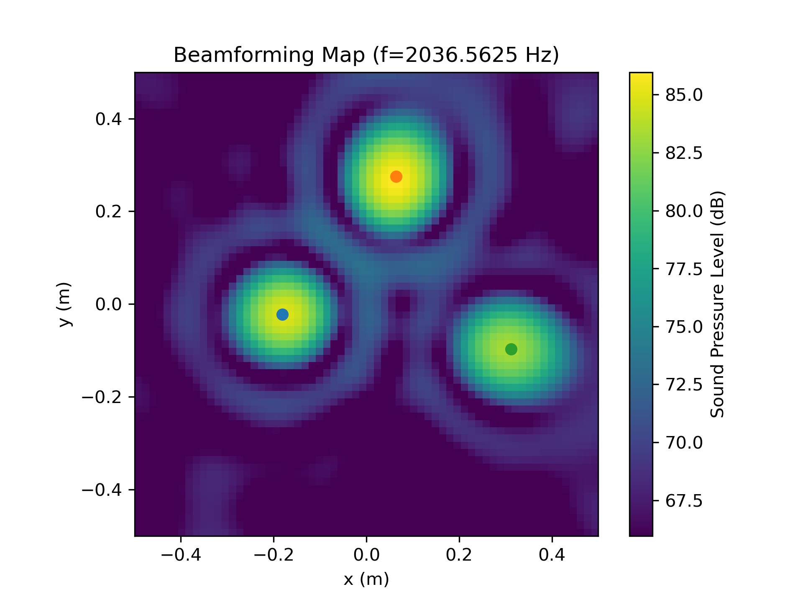

Quickstart
Generate Datasets
To generate microphone array data with one of the available dataset generation methods, the user needs to import and instantiate the respective class and call the method generate() with the desired parameters. The generate() method returns a Python generator, which can be used to extract the desired features.
The following code snippet shows how to create a dataset generator:
from acoupipe.datasets.synthetic import DatasetSynthetic
# instantiate dataset class
dataset = DatasetSynthetic()
# create data generator for frequency 2000 Hz (single frequency)
data_generator = dataset.generate(
size=10, split='training', features=['sourcemap','loc', 'f'], f=[2000], num=0)
The user has to specify the size of the dataset, the dataset split split and the features to be extracted. A full list of available features can be found in the Features section. Optionally, the user can specify certain frequencies f and the desired bandwidth num. If no frequencies are given, the features will be extracted for all frequencies in the range \([0, fs/2]\) Hz.
Dataset Splits
All datasets comprise the following independent splits:
trainingdatasetvalidationdatasettestdataset
The size of each split can be freely chosen.
In this example, we choose the sourcemap feature, which is a 2D beamforming map with the squared sound pressure amplitudes at a reference position as values. Furthermore, we include the source locations loc and frequencies f as potential labels of the dataset.
There are a few things to note when extracting features with the data generator:
data_sample = next(data_generator)
First, the data generator returns a single sample at a time, consisting of a dictionary with the feature names as keys and the corresponding data as values. Second, the data_sample dictionary includes two additional items, namely the idx and seeds of the sample. The idx is the sample index and the seeds are the random seeds used to generate the sample. Both are included for reproducible data generation, especially in multi-processing scenarios where the sample order may not be maintained.
Note
The frequency included in the data might be slightly different from the specified frequency. This is usually indicated by a warning and is due to the fact that the frequency is chosen from a discrete set of frequencies, which depends on the parameters of the FFT and the sampling rate fs of the dataset.
The sampling rate and the FFT parameters can be adjusted the following way:
fs = 44100
block_size = 4096
dataset = DatasetSynthetic(fs=fs)
dataset.config.fft_params['block_size'] = block_size
Now, the data can be plotted, e.g. by using the matplotlib library:
import acoular as ac
import matplotlib.pyplot as plt
import numpy as np
extent = dataset.config.grid.extend()
# sound pressure level
Lm = ac.L_p(data_sample['sourcemap']).T
Lm_max = Lm.max()
Lm_min = Lm.max() - 20
# plot sourcemap
plt.figure()
plt.title(f'Beamforming Map (f={data_sample["f"][0]} Hz)')
plt.imshow(Lm, vmax=Lm_max, vmin=Lm_min, extent=extent, origin='lower')
plt.colorbar(label='Sound Pressure Level (dB)')
# plot source locations
for loc in data_sample['loc'].T:
plt.scatter(loc[0], loc[1])
plt.xlabel('x (m)')
plt.ylabel('y (m)')
plt.show()
The resulting plot should look like this:
{kind=link}
A more in-depth example on how to generate the data, and how to create a TensorFlow-ready pipeline that produces data on the fly can be found in the Model training with training data generated on the fly example.
Store Datasets
The user can also save the datasets in two different file formats (HDF5 or TFRecord).
HDF5 format
HDF5 is a container-like format storing data in hierarchical order. Each case and the corresponding data is stored into a separate group of the file. The sample index acts as the group header.
└──'0'
|── 'sourcemap'
|── 'loc'
|── 'f'
|── 'seeds'
└──'1'
|── 'sourcemap'
|── 'loc'
|── 'f'
|── 'seeds'
└──...
| ...
The correct order is always maintained, which is important when multiple source cases are simulated in parallel tasks.
The following code snippet shows how to store the data in HDF5 format:
from acoupipe.datasets.synthetic import DatasetSynthetic
dataset = DatasetSynthetic()
dataset.save_h5(features=['sourcemap','loc', 'f'],
split='training', size=10, f=[2000], num=0,
name='/tmp/training_dataset.h5')
A more in-depth example on how to save and load the data, and how to create a TensorFlow-ready pipeline from file can be found in the Save and load datasets stored in HDF5 file format example.
TFRecord format
The TFRecord file format is a binary file format to store sequences of data developed by Tensorflow.
In case of running the simulation with multiple CPU threads, the initial sampling order of the source cases may not be maintained in the file.
However, the exact source case number can be figured out with the idx and seeds features when the file is parsed.
The following code snippet shows how to store the data in TFRecord format:
from acoupipe.datasets.synthetic import DatasetSynthetic
dataset = DatasetSynthetic()
dataset.save_tfrecord(features=['sourcemap','loc', 'f'],
split='training', size=10, f=[2000], num=0,
name='/tmp/training_dataset.tfrecord')
A more in-depth example on how to save and load the data, and how to create a TensorFlow-ready pipeline from file can be found in the Save and load datasets stored in TFRecord file format example.